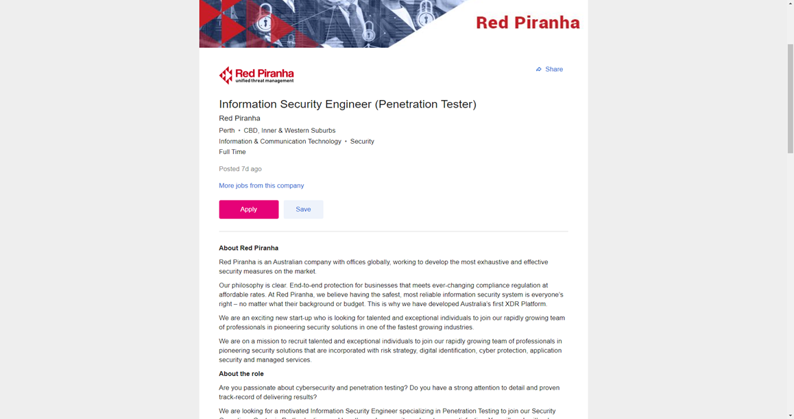
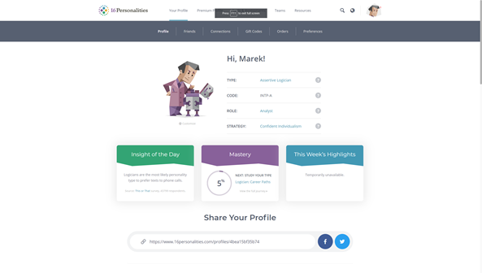
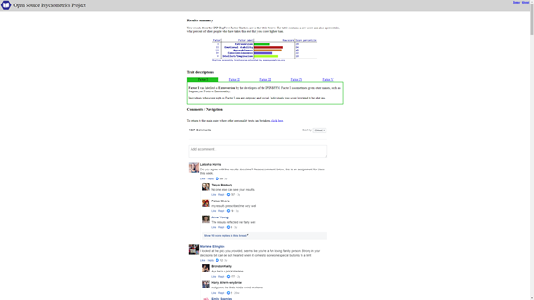

Personal Information
Marek Ivanov
Student number: s3925058
email: s3925058@student.rmit.edu.com.au
website www.github.com/
Student number: s3925058
email: s3925058@student.rmit.edu.com.au
website www.github.com/
Born in Estonia. After year 12 studied to be an electrician but once graduated started working with manufacturing precast concrete elements for buildings in Finland.
Came to Australia in 2013. Started working in a custom concrete furniture studio. Meanwhile started learning about CNC machines, 3D printers and lasers and 3D modelling. 5 years later got a job in a modelmaking studio in Perth that uses top of the range 3d printers to make dinosaurs for museums and shows. Have been playing around with in
Now doing freelancing projects including all aspects of 3D printing, prototyping and mold making and casting with resins and other composite materials I can speak Estonian and English fluently but also used to speak Russian and bit of German (haven`t used those languages for a while but its like riding a bike, comes back quickly when in use )
I remember my first computer lesson and it was mind blowing, the things that those computers could do was amazing. Like every other young student I was in it for the games. Played Doom3D a lot and over the years all sorts of games. Seeing the rapid development in that area, from floppy discs to portable mp3 players. Was amazed of technology. That was a start of my initial interest of IT.
Now 20 years later I have learned to use different tools from media editing to CAD design and Z Brush sculpting for 3D printing and rapid prototyping.
Last Christmas, I was working on a shopfitting project where we had to make some display windows move with stepper motors and Arduino boards. I thought that was easy to do and without much prior background took the lead on the task. Quickly understood that I don’t understand anything about that. Luckily for us a friend of a friend saved the day , or night, should I say, writing the programs all night in the shop.The reason I chose RMIT is that it gives the flexibility with time management, but also there is a sense of urgency. Having the opportunity to study on the road is great, as I like to travel around quite a bit. So far lack of urgency has really stopped me from progressing forward with my skills. Also like that everything is well structured to support the learning process. I expect to learn new skills, starting from being proficient in Python but also about network systems and other programming technique. Looking forward to understand the methods and tools used in computer world. Hopefully able to write useful programs that make life better at work and home.
Found an advertisement for a penetration tester position. I find this profession very fascinating. Finding weaknesses in systems sounds like a challenging job and there is a shortage of skilled technicians right now and in the future as well. I like to learn always, and a profession where everything is constantly developing and staying up to date is a must, sounds good.
After few years should be able to demonstrate a good technical knowledge of tools and methods used for security risk analyses.
Furthermore, need to have a clear understanding of how systems work and where are the weaknesses. An actual five-year work experience as a penetration tester is desirable requirement for this position. The job also requires, that the candidate is a team player, has got a good verbal and written communication skills and strong customer service and problem-solving skills. Desirable is an experience with most used scripting languages and having industry certifications like OSCP/OSCE, CISSP and CREST


I have positioned myself perfectly having pretty much no skills for this job. This gives me an opportunity to have a clear view what do I have to learn to become a good penetration tester.
I have got a leading hand position experience in manufacturing environment for about 5 years. With very strict deadlines, and coordinating the work of a small team, I believe to have a good stress tolerance with difficult situations. I am a good problem solver and have got lot of experience with talking with clients and suppliers even when situation is complicated.
Firstly, I need to get a solid foundation in Information Technologies. For that a bachelor’s in information technologies is a good start. With that I can get a job as a system or a network administrator.
Some time at that position and further training should make me employable in the field
So to conclude:
Penetration tester also called as an ethical hacker. As far as education, good starting place would be a bachelor degree in the field of IT, cybersecurity or computer science. Need to have a good knowledge of network systems and different operation systems
I think the ability to think outside of the box would greatly benefit someone looking into that position. In the long, run as the technology is rapidly advancing , desire to learn new things and stay updated about changes is a must.Currently have little knowledge of anything regarding IT so means that I have lot to learn about the tools of trade. On the other hand as I have worked in different industries over the years in different countries I have a good knowledge of how systems are being used in real life.
My Myers and Briggs test results:


Also learnig style test result:

And Big 5 factors test results:

The test results state that I am a Assertive Logician, more like a prospective introverted intuitive thinker. (INTP-A). Strenghts include being analytical, open minded and original with a curious mindset usually looking for the truth. Weaknesses would be little bit impatient, insensitive, disconnected and dissatisfied perfectionist.
A tactile learner, meaning like to learn things by doing them. Things are easier to learn by physical movement. Also a visual and auditory learning are good ways
IPIP Big Five Factor Markers show as wess that there is little bit of extroversion (29%) and lot of emotional stability (84%). Agreeableness score is 45% and conscientiouness is at 22% meaning that little disorganised little traditional and conventional (18% Intellect/Imagination)
Those test results I find quite precise overall. It is good that people can see my personality test results and I can see my team members results also. It helps everyone to get along more efficiently in the long run.
When working in a team it helps to work out what types of personalities work better together. I do not know if me being more introverted will cause any problems with lack of communication, but will have to be conscious about the weaknesses and strenghts.
When forming a team probably a good idea would be just to know each others strenghts and places where personalities come to play.
This project is about making a smart toilet paper holder. It is a smart shelve type of product. Smart toilet paper holder will remove the activity of toilet paper shopping from millions of peoples lives. It will make the life of elderly people much easier as there is one less thing to worry about. When detecting a low number of paper rolls, it automatically orders new patch toilet paper from distributor of choice. Therefore, removing an annoying task from our life.
The smart toilet paper holder will eliminate carrying bulky toilet paper bags while doing weekly groceries shopping. Instead it gets delivered to your when the number is running low with rideshare service or a courier service.
There are roughly 10 million dwellings in Australia, and very few truly enjoy shopping for toilet paper.
Using Raspberry Pi`s and couple of sensors it is quite easy to develop that kind of system.
The product will include built in Raspberry Pi equipped with wireless connectivity module. When possible, with Wi-Fi, if not available a 3G/4G card can be added. The product has got sensors to detect the number of toilet paper rolls. It will be plugged in to a permanent power source to eliminate the risk of battery running low but will include an internal battery for system protection. The sensors will be proximity sensors or optical sensor type.
Toilet papers are placed on the holder. Bottom row has got sensor where the rolls sit. When the paper roll is taken off the sensor it makes the sensor change its value.
This lets the program know the remaining number of rolls. Depending on the delivery time, location, weekday and paper usage, speed the program can be personalised and optimised.
When toilet paper count goes under certain set threshold it activates a notification function.
Message is sent to customers phone to confirm the new order. When approved the program will send a purchase request to a supplier. Once the order has gone through the package will be sent to the user.

Go back Up